Стили и школы. Принципы английской школы. Лоус. Плэнк.
Сборник "Шахматная задача. Руководство с иллюстрациями".
Воплощение принципов английской школы в двухходовых и трехходовых задачах. Хискот. Тавернер. Мэкензи
Уже на раннем этапе развития современной композиции обнаруживается заметное различие стилей. Даже в одной и той же стране при некоторых общих принципах построения задач бросаются в глаза индивидуальные особенности отдельных композиторов. Мы видели, как разнятся между собой, скажем, задачи Брауна и Гримшоу или Хили и Кэмпбелла. А в целом композиции английских авторов имеют иной характер, чем задачи Байера и Бергера.
Особенности стиля композиторов разных стран метко определил Лойд, с творчеством которого, ярко оригинальным и непохожим на творчество подавляющего большинства его современников, нам еще предстоит познакомиться. Так вот, Лойд писал, что в международных конкурсах его времени можно встретить совершенно разные произведения:
массивные, бесстрастные комбинации тевтонцев, забывающих считать стоящие на доске фигуры;
вялый, легкомысленный стиль венецианцев, нередко оставляющих свою работу незавершенной;
разнообразные примеры французских авторов, у которых подлинный сверкающий бриллиант или чистейший рубин может соседствовать с бесцветной посредственностью;
ясные, законченные и гладкие, как у хороших ремесленников, задачи бриттов с правильными решениями, покоряющие результатом, наступающим с неизбежностью механического закона; невероятно трудные задачи, отражающие суровость и строгость северного климата.
К этому еще необходимо добавить неизменно оригинальные, поражающие остроумием и неожиданностью замыслов произведения самого Лойда.
Возникшие первоначально у отдельных наиболее выдающихся композиторов, эти характерные черты закрепляются затем в творчестве их последователей, прежде всего из числа соотечественников. Привлекая все новых сторонников, стиль становится господствующим среди композиторов данной страны. Возникает школа.
Школа в задачной композиции, как и в любом другом виде искусства, предполагает наличие четко осознанных принципиальных особенностей данного направления, отличающих его от других направлений. Именно потому, что таких четких принципов не выдвинули, например, французские композиторы, они не создали своей школы. Школа предполагает, далее, наличие определенного, более или менее широкого круга авторов, активно работающих в данном направлении.
Принято говорить о трех больших национальных школах в задачной композиции XIX века; английской, немецкой и чешской. Все они сложились к концу 70 - началу 80-х годов как результат творчества группы энтузиастов-композиторов, работавших в каждой из этих стран. Примерно в одно время, в гг., вышли теоретические работы, своего рода манифесты этих школ, дающие обстоятельное изложение их основных принципов.
Ознакомление с характерными особенностями и творческими достижениями трех названных школ мы начнем с английской.
70-е годы в английской композиции характеризуются появлением ряда новых имен и изменением направления творчества. Английские композиторы почти прекращают работу над задачами с числом ходов больше трех. Значительное развитие получает двухходовая задача.
В области трехходовки наибольших успехов добивается в это время Д. Финлинсон. Особое внимание он уделяет задачам, содержащим единственный вариант, в котором разветвление игры получается только после второго хода белых. В примере № 000 -
№ 000
Д. Финклинсон Конкурс Британской шахматной ассоциации 1873 III приз
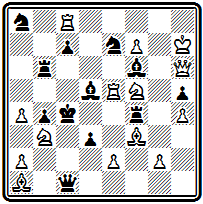
Мат в 3 хода
после 1. Cd4 грозит 2. Ка5#. Защита одна — 1... Ла6. В ответ на это белые делают выжидательный (кстати, тоже единственный) ход 2. g3, после чего черные, несмотря на обилие фигур, оказываются в цугцванге.
Композиция № 000 по конструкции и игре может удовлетворить самые взыскательные вкусы.
№ 000
Д. Финклинсон Конкурс Британской общества проблемистов 1879 I приз
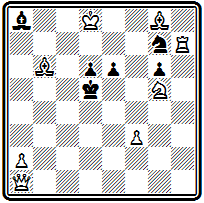
Мат в 3 хода
Тонкое вступление 1. Се3 ставит черных в положение цугцванга. Наиболее интересный вариант получается при 1... Крс6. Красивый длинный марш ферзя 2. Фf1 снова приводит к цугцвангу с четырьмя аналогичными матовыми положениями: 2... Kpd5 3. Фb5#; 2... Крb7 3. Фb5#; 2... d5 3. Фа6#; 2... Сb7 3. Фс4# .На 1... Крс4 решает другой тихий ход ферзя 2. Фb1; если же 1... Kf5, то 2. Лс7.
Все же подобные задачи с удлинением основного варианта на один ход выглядят искусственными. Поскольку главная игра сосредоточена в единственном варианте после второго хода белых, естественно отбросить первый ход и составить двухходовку.
Возможно, одной из причин возникновения удлиненных задач был ничтожный интерес к двухходовке. Ими английские проблемисты почти не занимались. В печати, в частности в отделе Стаунтона двухходовки до самого начала 70-х годов были редкостью, конкурсы на их составление не проводились, в конкурсных посылках могли участвовать только задачи с числом ходов не менее трех.
Едва ли не первым конкурсом, в который были включены и двухходовые задачи, явился Белфастский конкурс 1863 г. В соревнованиях международного масштаба композиции этого рода впервые появились в конкурсе Британской шахматной ассоциации 1873 г.
Лучшей поданному разделу была признана задача № 000 -
№ 000
И. Клинг Конкурс Британской шахматной ассоциации 1879 I приз
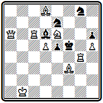
Мат в 2 хода
После 1. Фа1 черные разными способами лишают своего короля свободного поля f6, вследствие чего становится возможным 2. Kg7#. На уход короля 1... Kpf6 матует 2. Лf4# при двух связанных черных фигурах.
С этого времени начинается пора бурного развития двухходовки. В том же отделе Стаунтон в 1872 г. вынужден был писать:
"Двухходовок мы получаем теперь больше, чем можем их публиковать".
Интересен пример № 000.
№ 000
Д. Гюнтер "Джентлменс джорнэл" 1872
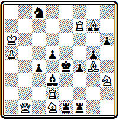
Мат в 2 хода
Выжидательное вступление 1. Ch8 сохраняет готовый в начальной позиции цугцванг черных и приводит к целой серии разнообразных вариантов.
Большим мастером двухходовки зарекомендовал себя Д. Тейлор. Как писал позже А. Мэкензи: "Тейлоровские двухходовки были блестящими и строгими примерами комплексного типа задач, распространенных среди композиторов стран английского языка; их характерные черты — свободный черный король и полное отсутствие дуалей".
В задаче № 000 -
№ 000
Д. Тэйлор Конкурс Британской общества проблемистов 1879 I приз
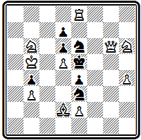
Мат в 2 хода
1. Фg1 дает черному королю третье свободное поле, но приводит к цугцвангу. На безразличное отступление коня е3 белый ферзь матует с a1 или g7. При защитах коня на d5 или f5 белые пользуются блокированием ноля у короля и матуют соответственно 2. К:d7# и 2. Kg4#. На ответы короля проходят маты ферзем или конем.
А композиция № 000 обращает на себя внимание тем, что в двух главных вариантах осуществляется превращение белой пешки в коня:
№ 000
Д. Тэйлор "Чесс чипс" 1878
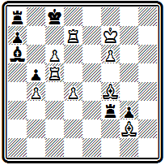
Мат в 2 хода
1. с7 Лb8 2. сbК#; 1... Крb7 2. с8К#.
Важным стимулом развития композиции в Англии явилось значительное увеличение числа отделов в периодических изданиях и проводимых ими конкурсов. Изменились также характер этих конкурсов и форма их организации. Если раньше они проводились по системе посылок, что делало их малодоступными для рядовых композиторов, а конкурсы отдельных произведений являлись редким исключением, то с конца 70-х годов последняя система становится правилом. Конкурсы организуются раздельно по каждому виду задач, и отличия присуждаются отдельным произведениям.
Англия занимала первое место по количеству конкурсов. Ряд изданий проводит их систематически. Большой популярностью пользовались, в частности, ежегодные конкурсы "Хаддерсфилд колледж мэгезин", журнала, который с 1880 г. был преобразован в ежемесячник "Бритиш чесс мэгезин", продолжающий издаваться до наших дней. Вскоре начинают организовываться тематические состязания. Известны, например, английские конкурсы 80-90-х годов на задачи при наличии на доске не более 10 фигур, определенного набора белых и черных фигур, с первым ходом, развязывающим две черные фигуры, без белого ферзя и т. п. В одном из соревнований требовалось, чтобы в начальном положении черный король стоял в центре доски, а белые фигуры размещались как можно дальше от него, в другом — чтобы в двухходовке было 4 варианта с матами ферзем на разных полях. Уже к области курьезов принадлежит, что в одном американском конкурсе присуждение проводилось по трем разделам: задачи "легкого веса" до 40 единиц, "среднего"— 40-55 и "тяжелого" — более 55. "Вес" определялся по наличию белых фигур: ферзь оценивался 15 единицами, ладья — 9, слон и конь — по 5, пешка — 2.
В формировании принципов английской школы важную роль сыграло творчество двух выдающихся ее представителей — Б. Лоуса и Ч. Плэнка.
Бенджамен Лоус начал составлять задачи в 1878 г. и уже в следующем году выдвинулся в число ведущих проблемистов Англии. Уже в ранних произведениях Лоус обнаруживает свой творческий стиль и последовательно развивает его в дальнейшей работе.
Задача № 000 составлена на знакомую нам тему свободного черного короля.
№ 000
Б. Лоус "Эр аргус энд экспресс" 1880 I приз
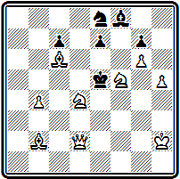
Мат в 2 хода
После 1. Ке3 у короля три свободных поля. Новым является то, что в идейных вариантах при отступлениях короля все маты чистые: 1... Kpd6 2. Кс4#; 1... Kpf6 2. Kg4#; 1... Kpf4 2. Ке6#. В трех других вариантах осуществляется блокирование полей у короля: 1... Kd6 2. Kg4#; 1... Kf6 2. Кс4#; 1... е6 2. Ке2#.
Легкое, изящное построение при весьма ограниченном материале у черных, четкая игра без дуэлей, чистые, а то и правильные маты — вот основные черты стиля Лоуса.
Две следующие задачи принадлежат к его лучшим двухходовкам.
В позиции № 000 силы черных немногочисленны — лишь слон и ладья, а какая развертывается интересная игра!
№ 000
Б. Лоус "Нортен фигаро" 1888 I приз
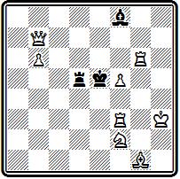
Мат в 2 хода
Красиво вступление 1. Лd6, жертвующее ладью. На взятие ее королем и слоном следуют чистые маты: 1... Кр:d6 2. Фс7# и 1... С:d6 2. Фg7#, на взятие ладьей — даже правильный: 1... Л:d6 2. Kg4#. Ладья создает еще два варианта: 1... Л~ 2. Ch2# и 1... Лd4 2. Ле6#; при 1... С~ матует 2. Фе7#; наконец, 1... Kpd4 2. Ф:d5#.
Эффектен первый ход и в задаче № 000,
№ 000
Б. Лоус "Ямайка глинер" 1885 II приз
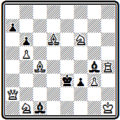
Мат в 2 хода
где ферзь удаляется из игры и становится под удар пешки — 1. Фа5. В результате цугцванга осуществляется ряд интересных вариантов: 1... bа 2. Сс5#; 1... Kpf2 2. К:g4# (эти два мата — чистые); 1... f2 2. Фс3#; 1... Cg~ 2. Фе1# и т. д.
Отмеченные черты стиля Лоуса реализовались и в трехходовой форме. Задача № 000 построена с угрозой.
№ 000
Б. Лоус Мельбурнский конкурс 1888 II приз
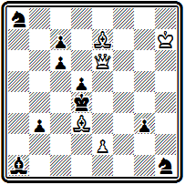
Мат в 3 хода
После 1. Фh6 на безразличный ход черных, скажем, 1... g2 последует 2. Фс1 и 3. Cf6# (2... Кре5 3. Фе3#). Черные могут защищаться, вводя в действие коней, но тогда блокируются поля и проходят два аналогичных варианта с правильными матами: 1... Kb6 2.Cf6+ Крс5 3. Фf8# и 1... Kf2 2. Фg7+ Кре3 3. Cg5# (1... Крс3 2. Фc1+, 1... Сb2 2. Фf4+).
Одна из лучших трехходовок Лоуса приведена на диаграмме № 000.
№ 000
Б. Лоус "Бредфорд обсервед баджит" 1890 I приз
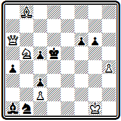
Мат в 3 хода
Защищаясь от созданной вступлением 1. Сh2 угрозы 2. Кс7+, черные создают ряд вариантов, заканчивающихся правильными матами: 1... Крс4 2. Ф:a4+ Kpd5 3. Кс7#; 1... Кре4 2. К:с3+ К(С):с3 3. Фd3# или 2... Kpf5 3. Фс8#; 1... с4 2. Фb7+ Kpc5 3. Cd6# или 2... Кре6 3. Kd4#.
Позиция № 000 одна из немногих четырехходовок Лоуса, но зато она вошла в сокровищницу классических произведений мировой композиции.
№ 000
Б. Лоус "Чесс мансли" I приз
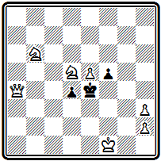
Мат в 4 хода
Все создает впечатление полной законченности. Некоторую пикантность придает игре наличие симметрии в главных вариантах: 1. Фc6 d3 2. Kc7+ Кр:е5(е3) 3. Kc4+ Kpf4 4. Ке6# или 2... Kpd(f)4 3. Ke6+ Кре3 4. Кс4#; 1... f4 2. Фg6+ Кр:е5 3. Кb4 f3 4. Kd3# или 3... d3 4. Кс6#. Дополнительная игра: 1... Kpd3 2. Фс1 f4 3. Фb1+ или 2... Кре4 3. Фе1+; 1... Кр:е5 2. Фf6+ Кре4 3. Фе6+.
Повышенное внимание к правильным матам несколько выделяет Лоуса среди других английских композиторов этого периода. Из-за этого Лоуса даже причисляли к последователям чешской школы. Сборник его задач, составленный И. Киблем и выпушенный Уайтом в 1933 г., носит название "Английский чех" (24). Это не совсем верно, так как у Лоуса правильные маты никогда не были основой замысла. Для него они — лишь завершение разнообразной игры, проходящей в вариантах задачи. Лоус является одним из основоположников и лучших мастеров английской школы, продолжившим на более высоком уровне стиль Брауна.
В предисловии к указанному сборнику И. Кибл описывает, как Лоус представлял себе идеал современной задачи:
"Совершенная четырехходовка должна иметь очень тихий и неожиданный первый ход;
угрозу в полные 4 хода, приводящую к восьми совершенно различным и одинаково красивым вариантам, по крайней мере половина из которых должна дальше еще разветвляться на три или четыре различных продолжения;
каждый мат (а их должно быть больше двадцати) должен быть правильным, а некоторые также зеркальными;
начальная позиция — изящная и естественная;
взятия и шахи отсутствуют;
экономия сил доведена до крайних пределов, каждая фигура необходима в каждом варианте;
отсутствует какая-либо неаккуратность: нет никаких следов дуалей, на кажущиеся напрасными защиты, ни сдвоенных пешек ни повторяющихся ходов, ни коротких матов;
полная безупречность, совершенство, без каких бы то ни было пятен".
Сам Лоус при этом добавлял, что он не видел задачи, в которой эти требования воплотились бы больше чем на 20 процентов.
С идеалом, выдвинутым Лоусом, согласятся композиторы всех школ и стилей. Но он, конечно, недостижим. А вот когда приходится, считаясь с реальными возможностями, от чего-то отказываться, чем-то поступиться, здесь и начинаются различия. Школы, стили, направления тем и отличаются между собой, что доступные к реализации 20 процентов они выбирают из разных частей стопроцентного идеала.
Чарлз Плэнк вступил на поприще композиции в 1880 г. Будучи весьма активным составителем, он завоевал в 80-х годах много отличий на английских конкурсах. Но еще большее значение имела его деятельность как пропагандиста и теоретика композиции. В 1887 г. в Англии вышла книга "Шахматная задача. Руководство с иллюстрациями" (25). Она содержала 400 задач четырех авторов — Г. Эндрюса, Э. Франкенстайна, Б. Лоуса и Ч. Плэнка, который написал и большую вступительную статью, давшую развернутое изложение основных принципов английской школы и на длительный срок определившую направление развития задачной композиции в Англии.
Плэнк выделяет в задаче, в порядке значимости, три элемента: 1)красота решения, 2) конструкция, 3) трудность.
Первые два элемента признаются основными, и им в статье уделено главное место.
Решение задачи подразделяется на три стадии, три составные части: первый ход, средняя стадия и матовая позиция. Если для первого хода понимание красоты у английских авторов соответствует взглядам других направлений, то понимание красоты средней стадии у них своеобразно.
Плэнк пишет, что под идеей или темой задачи он понимает "игру или взаимодействие фигур, которые ведут к третьей, финальной, ступени — матовой позиции", все то, что заключено между вступительным ходом и матовой позицией.
Он считает неправильным выделение в задаче главной темы, которой были бы подчинены все остальные;
некрасиво и повторение одной и той же идеи в ряде вариантов.
Наоборот, большое различие идей, воплощенных в задаче, обогащает содержание и делает ее лучше.
Разнообразие, многосторонность — одно из важнейших украшений задачи.
В двухходовке применение принципа многообразия позволяет строить большое число различных вариантов.
Плэнк ссылается на свою задачу № 000,
№ 000
Ч. Плэнк Конкурс шахматной ассоциации в Серрее 1884 спец приз
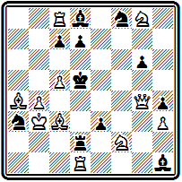
Мат в 2 хода
в которой после 1. С:d7 осуществляется 15 разных матов. В большинстве такие задачи строятся на цугцванге; осуществить большое разнообразие в композициях с угрозой очень трудно.
В трехходовках возможное число вариантов, естественно, меньше. Плэнк отмечает, что при достигнутом в то время уровне задачной композиции наибольшее число вариантов в трехходовке составляет 5-6, считая только разные вторые ходы, а не дальнейшие подварианты.
Приводимая Плэнком в качестве примера задача № 000
№ 000
Ч. Плэнк "Балтимор сандиньюс" 1885 I приз
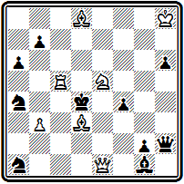
Мат в 3 хода
"содержит семь разных вариантов, из которых только один (2. Фс3+) не представляет интереса для решающего". Решение таково: 1. Сb5 (угроза 2. Кс6+) 1... ab 2. Фd2+ Кр:с5 3. b4#; 1... Фh5 2. Ф:g1+ Кре4 3. Cd3#; 1... f3 2. Фb4+ Кре3 3. Kg4# — в первом варианте мат правильный, в двух последних маты чистые; остальные варианты: 1... Кр:с5 2. Kd3+, 1... К:с5 2. Kf3+, 1... Кb6(с3) 2. Ф(:)с3+.
Плэнк ссылается и на другое свое произведение — № 000, "содержащее шесть основных вариантов, каждый с какой-либо пуантой".
№ 000
Ч. Плэнк "Миррор оф америкэн спортс" 1887 I приз
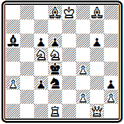
Мат в 3 хода
После 1. Ф:g6 черные в цугцванге. Два первых варианта 1... Кр:с5 2. Ф:d6+ Кр:d6 3. Се7# и 1... cd 2. Фе4+ de 3. Кb3# содержат жертвы белого ферзя; 1... dc 2. Cf6+, 1... Сс4 2. Ке6+, 1... с2 2. Кb3+ и 1... Крс4 2. Ф:d3+.
В итоге Плэнк заявляет, что "комбинирование большого числа тонких, различных и правильных вариантов является основным принципом композиции".
Употребленный в этой формулировке термин "правильный вариант" подразумевает отсутствие дуалей.
Вопросу о дуалях английские авторы придавали исключительное значение, считая, что наличие дуали разрушает всю красоту варианта.
Если по отношению к дуалям в трехходовках еще проявлялась некоторая терпимость (даже в указываемых Плэнком примерах они есть:
№ 000 — на 1... Cf2 и 1... Кb2, в № 000— на 1... Сb5 и 1... Сb7), то в двухходовках они считались абсолютно недопустимыми: ни в одном варианте задачи ни на один ответ черных, хотя бы он и не защищал от угрозы, не должно быть двойных ответов.
Хорошая задача, по Плэнку, немыслима и без красоты матов. Здесь первым условием является соблюдение чистоты мата.
"Невозможно описать художественный эффект, производимый сочетанием нескольких совершенно различных чистых матов".
Помимо большого эстетического впечатления, чистота матов имеет значение как распространение принципа экономии на конечную позицию.
Особо выделяли и ценили английские композиторы так называемые зеркальные маты, в которых на полях, непосредственно окружающих черного короля, не стоит ни одной белой или черной фигуры.
"После красоты решения хорошая конструкция является наиболее важным элементом задачи".
Здесь обращается внимание на возможность начальной позиции, экономичность, естественность и отсутствие каких-либо частных недостатков.
В отношении трудности задачи Плэнк держался мнения, что некоторая доля ее необходима для задачи, но трудность не должна быть самоцелью. "Задача не должна быть "китайской головоломкой", доступной для понимания и решения только очень немногих избранных".
Приведем еще одно суждение Плэнка, представляющее общий интерес:
"Для составления первоклассных современных задач совершенно необходимо обладать следующими качествами:
1. Настойчивостью в изучении работ других авторов, чтобы получить правильное представление о том, что желательно и что нежелательно;
2. Живым воображением, чтобы находить простейшие схемы, позволяющие успешно реализовать выбранные идеи;
3. Хваткой и сдержанностью, чтобы сразу видеть все скрытые возможности данной схемы и эффект, который она может дать;
4. Быстротой восприятия, чтобы инстинктивно схватывать возможности полезных добавлений или устранения появляющихся трещин;
5. Здравостью суждения, чтобы правильно выбирать между различными альтернативами, возникающими в процессе конструирования задачи;
6. Силой анализа, чтобы полно и систематически проверять правильность законченного произведения;
7. Бесконечным терпением, чтобы избежать разочарования при неизбежных неудачах".
Мы познакомились с принципами английской школы в изложении одного из ее создателей. Перейдем к рассмотрению творчества наиболее значительных представителей этой школы.
Слэйтера было весьма популярно в конце прошлого века, успешно выступал он и в нынешнем столетии. Он с равным эффектом работал в области двухходовок и трехходовок.
Позиция № 000 интересна тонким первым ходом.
№ 000
Д. Слэйтер "Шеффилд индепендент" 1887 I приз
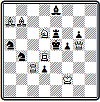
Мат в 2 хода
В начальном положении как будто все готово, на любой ход черных находится ответ: 1... Л:d6 2. Ле4#, 1... Лf6 2. Фе3#, 1... Ле7 2. Ф:е7#, 1... С~ 2. Kf7#, 1... d2 2. Ле3#, 1... Ка~ 2. Кс4# и 1... Кb~ 2. Лd5#.
Только всматриваясь внимательнее, мы обнаруживаем, что на один ход черных готового ответа нет — 1... Кbс6. Выходит, решить задачу выжидательным ходом нельзя, надо становиться в засаду ладьей: 1. Лb3. Теперь на 1... Кbс6 будет мат 2. Лb5#.
Трехходовка № 000 открывается ходом ладьи
№ 000
Д. Слэйтер "Нашвилл дейли америкэн" 1884 I приз
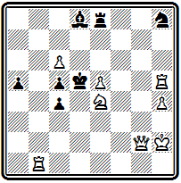
Мат в 3 хода
1. Лf5, переходящей через поле g5 для создания угрозы 2. Kg5+ Kpd4 3. Фd2#. Основные варианты заканчиваются аналогичными матами ферзем: 1... Кре6 2. К:с5+ Кр:f5 3. Фе4#; 1... Кр:с6 2. Kf6+ Крс7 3. Фb7#; 1... Kpd4 2. Лd1+ Кре3 3. Фf3#; 1... Л:е5 2. Фd2+ Кре6 3. Фd7#.
В примере № 000 основой содержания являются тихие варианты, получающиеся при ходах черного короля на свободные поля:
№ 000
Д. Слэйтер "Глазго уикли гералд" 1890 I приз
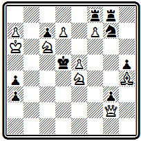
Мат в 3 хода
1. е6 (угроза 2. Kf6+ Крс4 3. Фс2#) 1... Крс4 2. Фd2 Крb3 3. Ка5#; 1... Кр:с6 2. Фа2 ~ 3. Фс4# или 2... К:е6 3. Ф:е6#; 1... Кр:е6 2. Кс5+ Крd6 3. Се7# (правильный мат) или 2... Kp:f7 3. Ке5#(чистый мат).
В том же духе построена задача № 000, но с более тонкой игрой.
№ 000
Г. Дэвис "Брайтон сосайети" 1896 II приз
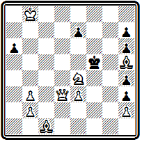
Мат в 3 хода
После 1. Фd8 грозит 2. Ф:е7 и 3. Kd6#. Эта угроза проходит при 1... а5 и 1... Кр:е4. В последнем случае матует пешка е3: 2. Ф:е7+ Kpf5 3. е4#. При ходах пешки е7 варианты заканчиваются чистыми матами: 1... е6 2. Cf3 Кре5 3. Фа5# - очень красивый далекий мат и 1... е5 2. Kd6+ Кре6 3. Cf7#. На ходы короля следует 1... Кре5 2. Cg4 с неизбежным 3. Фd4# и 1... Кре6 2. Фа5 (снова красивый далекий ход ферзя) и после вынужденного 2... Kpd7 — 3. Фd5#.
История композиции знает всего несколько женщин - составительниц задач. И только одна из них смогла подняться до мастерства выдающегося класса — англичанка В. Бэрд. Начав свою деятельность в 1883 г., она не раз завоевывала в конкурсах высшие отличия, выше многих маститых проблемистов. Работала Бэрд в ортодоксальном английском стиле. Сборник ее 700 избранных произведений вышел в 1902 г. (25 а).
В задаче № 000-
№ 000
В. Бэрд "Саусерн кантрис чесс джорнэл" 1893 I приз
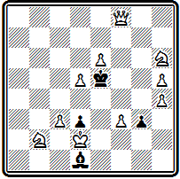
Мат в 3 хода
вступление 1. Фа8 дает черному королю три свободных поля взамен одного, имевшегося в начальном положении. Основные варианты проходят при игре короля: 1... Kpf4 2. К:d3+ Кр:f3 3. d6#; 1... Kpd6 2. Кс4+ Кре7 3. Kg8# или 2... Крс7 3. d6#; 1... Kpf6 2. Фh8+ Кре7 3. Kf5#. Все маты чистые, а два первых — даже правильные; угрозы 2. К:d3+ и 2. Кс4+
Интересна двухходовка № 000, замысел которой предвосхищает тему, разрабатывавшуюся много позже.
№ 000
В. Бэрд "Вест суссекс таймс" 1893 II приз
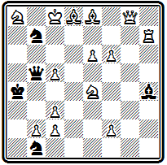
Мат в 2 хода
После 1. Фg4 белые грозят дать мат любым отступлением коня е4, но задача построена так, что дуалей нет — на любой ответ черных мат объявляется строго единственным способом. Например, на 1... Ф:е8 матует только, 2. Kd6# так как конь должен отнять освобожденное ферзем поле b5, 1... С~ 2. К:С# и т. д. На два хода, защищающие от грозящей батареи, следуют маты с использованием блокирования: 1... Ка5 2. Кb6# и 1... Ка3 2. b3#. При 1... К:d8 матует 2. Ла7#; зато этот ход черных опровергает попытку 1. Л:h5.
Одним из наиболее выдающихся английских композиторов, несомненно, является Г. Хискот. Расцвет его творчества приходится уже на нынешнее столетие, но начало относится к концу XIX века. Первый период деятельности Хискота охватывает гг.., после чего у него был перерыв до 1897 г.
Задача № 000 решается красивым ходом
№ 000
Г. Хискот "Бристоль меркюри" 1890 I приз
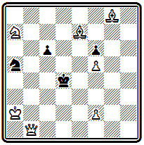
Мат в 3 хода
1. Cd5, ставящим слона под удар короля и пешки. Грозит 2. Фе4+. В двух основных вариантах осуществляются правильные эхо-маты: 1...cd 2. Кb5+ Крс4 3. Фf1# и 1...Кс4 2. К:с6+ Кр:d5 3. Фh1#. Чистый мат получается после 1...Кр:d5 2. Фd3+ Кре5 3. Cd6#; на 1...с5 следует 2. С:f6+, 1... Крс3 2. Сb4+.
Уже к концу первого периода своей деятельности Хискот совершенствует техническое мастерство и выступает с рядом произведении, вполне законченных по форме. Он уделяет большое внимание правильности матовых позиций и ближе всех из английских композиторов подходит к принципам чешской школы.
Иллюстрацией может служить задача № 000, в которой все четыре варианта заканчиваются правильными матами:
№ 000
Г. Хискот "Кентиш меркюри" 1892 II приз
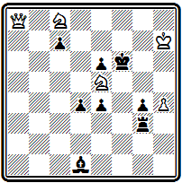
Мат в 3 хода
1. Kd6 Кре7 2. Фf8+ Кр:f8 3. Кg6#; 1... Кр:е5 2. Кс4+ Kpf4 3. Фf8#; 1... cd 2. Фd8+ Кр:e5 3. Фg5#; 1... ~ 2. Фh8+ Кре7 3. Кс8#.
В области двухходовки работы Хискота этих лет отличаются изяществом и мастерством.
Глубоко проникая в тайны позиции, он вскрывает и умело использует все ее скрытые возможности.
Сколько парадоксальности в неожиданном первом ходе композиции № 000-
№ 000
Г. Хискот "Ист сентрал таймс" 1889 I приз
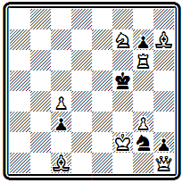
Мат в 2 хода
Слон занимает сильнейшее положение и вдруг делает нелепейший, на первый взгляд, ход — 1. Сb2. Но оказывается, что уход в засаду за пешку подготовляет ответ на ее ход 1... с2 2. Kd6#, в случае же принятия жертвы пешка будет отвлечена от диагонали b1—е5: 1... cb 2. Фb1#.
В задаче № 000
№ 000
Г. Хискот "Инглиш меканик" 1891 I приз
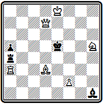
Мат в 2 хода
первым ходом 1. Се4 слон занимает точку пересечения линий действия слона и ладьи, кроме того, его может взять и король. Однако на все эти ходы следуют изящные экономичные маты: 1... С:е4 2. f4#, 1... Л:е4 2. Л:а5# с использованием перекрытия соответственно ладьи и слона — тема Новотного, 1... Кр:е4 2. Ле3#. Грозит мат 2. Фd5#, на 1... Лd4 используется блокирование 2. Фе7#.
Задача вызвала много подражаний.
Верхом технического совершенства представляется пример № 000.
№ 000
Г. Хискот "Скулмастер" 1892 II приз
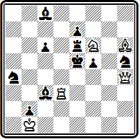
Мат в 2 хода
Свободное расположение довольно значительных сил черных наводит на мысль, что задача на угрозу. Однако создать ее не удается. Это задача на цугцванг с рядом интересных тонкостей. Очень хорош первый ход 1. Cd2, перекрывающий черного слона для подготовки блестящего мата ферзем при 1... Л:f6(ef) 2. Фd1#. Ферзь матует еще трижды: 1... К:f6 2. Фf4#, 1... С3~ 2. Фd4# и 1... f4 2. Фg5#; по два мата дают ладья —1... Лd6 2. Ле3#, 1... с5 2. Лd5# и слон — 1... Кh~ 2. Сf4#, 1... Ка~ 2. С:с3#. Конь играет на ходы слона с8: 1... С8~ 2. Кd7#.
Максимальная нагрузка всех белых сил, красивые ходы, тонкая дифференциация матов, объявляемых с поля f4, предельная четкость игры — все это создает большое художественное впечатление.
Большим мастером был Т. Тавернер, специализировавшийся на двухходовках.
Задача № 000 представляет собой сложный многовариантный цугцванг, выполненный при относительно легком построении.
№ 000
Т. Тавернер "Касселс сэтерди джорнэл" 1886 I приз
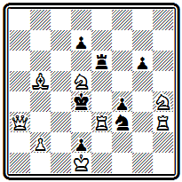
Мат в 2 хода
Вступление 1. Кс3 уводит из-под удара коня, но это компенсируется жертвой ладьи. На ходы черной ладьи по горизонтали матует 2. Ле4#, при ходах по вертикали проходит 2. Фа7#, на 1... Ле5 используется блокирование 2. Лd3#. как и при 1... Л:е3 2. Фd6#. Еще два варианта с блокированием создают пешки 1... d5 2. Ке2# и 1... fe 2. К:f3#. На безразличный ход коня белые, используя включение ладьи h3, матуют ходом 2. Фb4#, когда же конь защищается от этого мата ходом 1... Ке6, следует 2. Ле4# при перекрытии черной ладьи; второе перекрытие ладьи, по горизонтали, проходит при 1... d6 2. Фа7#. В задаче имеется ряд вариантов с интересными тактическими моментами.
Композиция № 000 уже специально построена на идее блокирования, осложненной выключением белых фигур на матующем ходе.
№ 000
Т. Тавернер "Йеновин ньюс" 1888 I приз
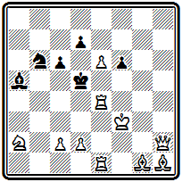
Мат в 2 хода
Автор нашел интересный механизм для четырехкратного представления идеи с использованием королевской батареи: 1. Лh4 цугцванг, 1... de 2. Кре2#, 1... с5 2. Kpf2#, 1... d6 2. Крg3 и 1... Кс4 2. Kpg4#. На безразличный ход коня матует 2. с4#, а на ходы слона проходят маты со взятием его конем или ферзем.
Творчество Тавернера приближалось к направлению, которое начали разрабатывать в двухходовке американские композиторы.
Придерживаясь канонической английской формы, Тавернер воплощал разнообразные тактические идеи.
В начальном положении задачи № 000 готовы ответы на все ходы черных,
№ 000
Т. Тавернер "Иен энд пенсил" 1890 I приз
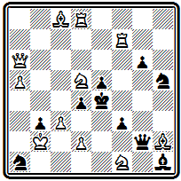
Мат в 2 хода
кроме 1... Кg3. При нем нельзя воспользоваться ни перекрытием ферзя 2. Ф:g6+ Kf5!, ни снятием удара с поля f6 2. Kf6+ Kpf4! Надо готовить новый мат. Подобно задаче Слейтера (№ 000), решает скрытый ход ладьи, покидающей сильную позицию и уходящей в засаду – 1. Лh7. Теперь белые дважды используют перекрытие черного ферзя: 1... g5 2. Фg6# и 1... Кg3 2. Лh4#.
Композиция № 000 составлена одновременно и независимо от приведенной ниже (№ 000) задачи Вюрцбурга, в которой использован такой же механизм развязывания ладьи:
№ 000
Т. Тавернер "Хэкин меркюри" 1892 I приз
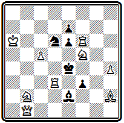
Мат в 2 хода
1. Фd1 Кb5 2. Ле3# и 1... Кс4 2. Лd4#. Сравнивая обе проблемы, можно наглядно убедиться в различии английского и американского направления в двухходовке. У Тавернера использование цугцванга приводит к развернутой разнообразной игре. Поучительна мотивировка развязывающих ходов коня, защищающих от мата 1... К~ 2. Фа4#. Хороши дополнительные варианты с блокированием 1... К:f5 2. Л:е6#, 1... е5 2. Kg3# и т. д.
В произведении Вюрцбурга отказ от цугцванга и создание угрозы позволили существенно расширить основную идею и, помимо развязывания ладьи, осуществить развязывание слона, но исчезло разнообразие игры.
Творческий спор между этими двумя направлениями продолжался некоторое время и в XX веке и разрешился в пользу американского стиля, открывшего для двухходовки широкие перспективы развития идейного содержания.
В конце XIX века начал выступать П. Блэк, очень быстро добившийся крупных успехов. В XX веке ему предстояло стать одним из наиболее выдающихся композиторов Англии и ближайшим сподвижником Хискота в дальнейшем развитии английской школы. Блэк составлял задачи разных жанров, но на первых порах он наиболее успешно работал в области двухходовки.
Задача № 000 интересна тонкой дифференциацией матов на игру черного коня g4.
№ 000
П. Блэк "Брайтон сосайети" 1896 I приз
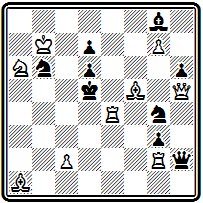
Мат в 2 хода
После 1. Лb4 при уходе коня с поля g4 становятся возможны сразу три мата: 2. Ch3#, 2. Фf3# и 2. Фd1#. Конь может защититься от всех этих матов — 1... Ке5, но тогда он блокирует поле и следует новый мат 2. Лd4#, при остальных же отходах коня на f6, е3 и f2 он защищает лишь от двух угроз, а третья приводится в исполнение. Некоторые тонкости есть и при игре других черных фигур.
В проблеме № 000 трудность заключается в выборе вступительного хода.
№ 000
П. Блэк "Бирмингам дейли пост" 1897 I приз
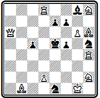
Мат в 2 хода
Для подготовки мата на 1... с4 белым надо перебросить ладью на левый фланг. Естественно попробовать 1. Ла4 (1... с4 2. Ла5#), но ладья перекрывает ферзя и разрушает готовый мат 1... е6 2. Фа1#; попытка 1. Лс4 опровергается ответом 1... f6, так как ферзь снова перекрывается и не может осуществить мат 2. Фе2#. Решает только 1. Лb4 с жертвой ладьи: 1... cb 2. d4#, 1... с4 2. Лb5# и т. д.
Прекрасный пример комбинаций в игре белых фигур, составленный за 30 лет до их открытия в XX веке.
Задача № 000 — двухходовка на тему Гримшоу, которая осуществляется дважды, на полях с6 и е6.
№ 000
П. Блэк "Хаус" 1898 I приз
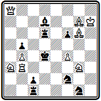
Мат в 2 хода
После 1. Cf7 черные в цугцванге. Основные варианты: 1... Лс6 2. К:b5#; 1... Сс6 2. Фа7#; 1... Ле6 2. Kf5#; 1... Се6 2. С:f6#.
Из метрополии задачная композиция постепенно распространилась по доминионам и владениям Англии. Уже в 70-х годах проводились конкурсы в Канаде, к концу века выдвинулись композиторы в Австралии, Новой Зеландии, Южно-Африканском Союзе.
Очень интересна двухходовка № 000 новозеландского композитора Ф. Кускопа. Построенная по правилам английской школы, она иллюстрирует игру черного ферзя, располагающего значительной свободой передвижения.
№ 000
Ф. Кускоп "Кентербери таймс" 1899 I приз
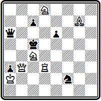
Мат в 2 хода
Наиболее интересны варианты с блокированием: 1. Кd6 Ф:d6 2. Лс3#; 1... Фе6 2. К:е6#; 1... Фb6 2. Фс4#; 1... cd 2. Cd4#. При взятии ладьи получаются два правильных мата 1... Ф:d3 2. К6b7# и 1... К:d3 2. Ke4#.
Задача известного южноафриканского проблемиста С. Булля № 000 содержит любопытные варианты, из которых первые два заканчиваются правильными матами.
№ 000
С. Булль "Кентиш меркюри" 1892 I приз
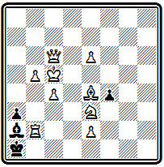
Мат в 3 хода
1. Фа8 с угрозой 2. Ф:а3, 1... fе 2. Лd2 еd 3. Фh8#; 1... аb 2. Сb1 Кр:b1 3. Фh1#; 1... Кр:b2 2. Фh8+ Крb3 3. Сс2#.
Особое место занимал А. Мэкензи—житель Ямайки. Начав проблемистскую деятельность в 1880 г., Мэкензи благодаря выдающемуся таланту и большой работоспособности быстро выдвинулся в ряды крупнейших композиторов мира. Его конкурсные успехи были исключительными.
В 1887 г. Мэкензи издал сборник своих задач: "Шахматы, их поэзия и проза" (26). Во вступительной статье он изложил свои творческие взгляды, которые полностью совпадали со взглядами английских композиторов, изложенными в статье Плэнка из одновременно вышедшего сборника "Шахматная задача".
Задачи Мэкензи неизменно производят впечатление фундаментальности, массивности. Он не боится заставлять доску фигурами, умея всем им дать основательную нагрузку. В примере № 000 использованы почти все черные и белые фигуры и достаточное количество пешек. Черные располагают большим количеством ходов, и ни на один из них нет дуали.
№ 000
А. Мэкензи "Миррор оф америкэн спортс" 1886 I приз
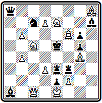
Мат в 2 хода
Первый ход 1. Кb7 перекрытием черного ферзя готовит ответы на ряд ходов черных. Всего в задаче 12 разных матов. Наиболее интересные из них проходит при игре батареи: 1... Cg8 2. Л:f3#; 1... Ке6 2. Лf5#; 1... Лf4, Л:d3(e4) 2. Лe6#; 1... Лg(h) 2. Лf8#; 1... Kpd4 2. Лf4#.
Не менее сложна по построению задача № 000.
№ 000
А. Мэкензи "Сент-Джонс баджит" 1894 III приз
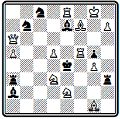
Мат в 2 хода
Здесь первый ход меняет ответ на ход 1... С:d5. Вместо готового в начальном положении 2. С:d5# после 1. Cg6 матует 2. Лf7#. Из вариантов выделяется перекрытие Гримшоу на поле b3: 1... Лb3 2. Фс4# и 1... Сb3 2. Кс3#, а также блокирование полей у короля по третьей горизонтали: 1... ЛfЗ 2. Ле5#, 1... Ле3 2. Kf2# и 1... Л:d3 2. Фе6#.
Техническое мастерство Мэкензи позволило ему и в трехходовке строить такие же сложные многовариантные цугцванги с большим количеством чистых матов. Так, в композиции № 000
№ 000
А. Мэкензи "Санни саус" 1890 I приз
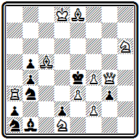
Мат в 3 хода
после 1. Се7 в результате цугцванга получаются четыре варианта с чистыми матами: 1... Kpd5 2. Фе6+ Кр:е6 3. Cf7#; 1... ba 2. С:b5 Kpd5 3. Ке3#; 1... К(С)с2 2. f3+ Kpd3 3. С:b5# или 2... Kpd5 3. Фg8#; 1... gf 2. К:f2+ Кр:е3 3. Сс5# или 2... Kpd5 3. Фg8#; варианты без чистых матов: 1... Kpd3 2. Cg6+, 1... g2 2. Фf5+ и 1... Kb~ 2. f5+.
Трехходовка № 000 отличается тем, что в ней выделяется центральный вариант -
№ 000
А. Мэкензи "Питсбург диспэтч" 1892 I приз
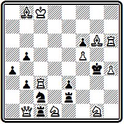
Мат в 3 хода
1. Ch7 Л:b1 2. Лс7 Kpf4 3. Лс4# и 2... Крg3 3. Лg7#. В нем осуществляется пассивная жертва ферзя для отвлечения ладьи с вертикали "с" и красивая игра ладьи, сначала выключающей слона от двух полей у черного короля, а затем дающей красивые чистые маты двойными шахами. На фоне этой главной игры проходят остальные варианты, получающиеся в результате цугцванга: 1... b2 2. Фа2; 1... а3 Ф:b3; 1... Л:d1 2. Ф:d1; 1... Ле1 2. Kf2+; 1... Лd2 2. К:е3+; 1... b4 2. Лс4+.
В 1896 г. Мэкензи потерял зрение. Тем не менее он не оставил композицию, и задачи, составленные им вслепую, принадлежат к числу его лучших произведений, принесших автору множество высших отличий на международных конкурсах.
Позиция № 000 по построению — типичный цугцванг с серией разнообразных вариантов.
№ 000
А. Мэкензи "Брайтон сосайети" 1898 I приз
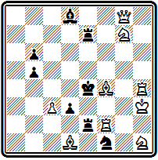
Мат в 2 хода
Однако наличие разветвлений 1. Фа2 Ле3+ 2. Cg3# и 1... Ле5 2. Cg5# с симметричной игрой белой батареи, использующей блокирование полей у короля черными ладьями, свидетельствует об американском влиянии. Заслуживает удивления, как хорошо автор справился с техническими трудностями осуществления подобного замысла в форме цугцванга.
По иному принципу построена задача № 000, в которой представлена идея полусвязывания черных фигур.
№ 000
А. Мэкензи "Сидней морнинг гералд" 1898 I приз
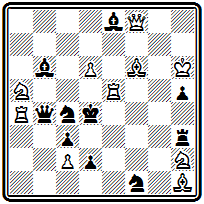
Мат в 2 хода
Защищаясь от создаваемой ходом 1. Cd8 угрозы 2. Фf4#, черные ферзь или конь покидают четвертую горизонталь, после чего оставшаяся фигура оказывается связанной: 1... Ф:d6+ 2. Ф:d6# при связанном коне и 1... К:е5 2. С:b6# при связанном ферзе. Другие варианты: 1... Kg3 2. Kf3# с перекрытием, 1... Ле3 2. Лd5# с блокированием и 1... Кр:е5 2. Фf6#.
И здесь техническое мастерство автора сказалось в том, что, несмотря на обилие и свободу черных фигур, ни на один их ход нет дуали.
В 1905 г. выходит новый сборник задач Мэкензи под названием "Шахматная лирика", положивший, кстати, начало уайтовской серии (27). Здесь приведено около 300 произведений, составленных автором после 1886 г., и помещена обширная статья, начинающаяся с автобиографии и охватывающая большой круг самых разнообразных вопросов, относящихся к задачной композиции. Тут и теоретические вопросы о роли чистоты и экономии матовых позиций, и частная полемика по вопросу случайного совпадения задач у разных авторов, и общий критический обзор современного состояния композиции, и рассуждение о порядке присуждения призов или сетования по поводу незаконченных конкурсов. Написанная очень живо, с большим количеством примеров, статья эта представляет огромный интерес.
Теоретические высказывания и творческая практика Мэкензи показывают, что в самом конце XIX века он изменил свое отношение к матовым позициям и стал считать необходимой в задаче не только чистоту матов, но и их правильность. Приводя цитату из судейского отчета Плэнка и Лоуса по одному из конкурсов, Мэкензи показывает, что они также изменили к этому времени свою точку зрения и стали предпочитать задачи с правильными матами.
Последние работы Мэкензи показывают его большие успехи на этом новом поприще. В задаче № 000,
№ 000
А. Мэкензи "Бритиш чесс мэгезин" 1897 I приз
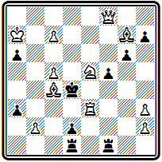
Мат в 3 хода
решающейся ходом 1. Фе8, идейные варианты с правильными матами получаются при защитах от угрозы 2. Лd3+ - 1... Кр:с5 2. Фb8 Kpd6 3. Cf8#, 1... Лf3 2. Фе6 Кр:е3 3. Kd3# и 1... f4 2. Фc6 Кр:е3 3. Kg4#. Главные варианты осуществляются с тихими ходами.
Задача Мэкензи № 000 представляет особый интерес, так как она завоевала высшее отличие на большом чешском конкурсе.
№ 000
А. Мэкензи Пражский конкурс 1898 I приз
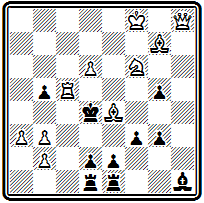
Мат в 3 хода
Следует отметить, что в силу большого своеобразия принципов чешской школы, о которой речь пойдет в одной из следующих глав, иностранцам всегда было чрезвычайно трудно завоевать здесь высшие отличия. Известны буквально единичные случаи этого рода, первым из которых явился успех Мэкензи. Вступительный ход 1. Фh3 создает угрозу 2. Фf5. Первый правильный мат получается после тихих ходов ферзя в вариантах 1... g4 2. Фh6 (с угрозой 3. Лh5#) и 1... f2 2. Ф:g3 (с угрозами 3. Фс3# и 3. Ф:f2#)— в обоих случаях на ход 2... Кр:с5 следует правильный мат 3. Kd7#, в котором белый ферзь атакует поле d6. Два других правильных мата осуществляются в вариантах 1... Кр:с5 2. Kd7+ Кр:d6 3. Се5# и 1... Кре3 2. Kd5+ Кр:е4 3. Фh7#.
Правильными матами в главных вариантах завершается и композиция № 000, но основой ее содержания являются не сами эти маты, а приводящая к ним игра. Оба главных варианта построены на отвлечении черных ладей и осуществляются красивыми ходами с выключением белой ладьи:
№ 000
А. Мэкензи "Нью-Йорк сан" 1898 I приз
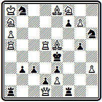
Мат в 3 хода
1. Са4 Ла:d1 2. Сb5 Кр:d5 3. Cd3# и 1... Лf:d1 2. Кb5 Кр:d5 3. Kd6#; угроза 2. Фс2+, на 1... Л:а4 решает 2. Ф:f1.
Позднее Мэкензи создал улучшенную редакцию этой задачи -
А. Мэкензи сборник "Шахматная лирика" 1905 (версия)
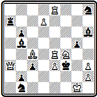
Мат в 3 хода
1. Фа6 Л:а6 2. Ке6, 1... С:а6 2. Се6. Примечание: проходит еще - 1. С:b5!(2. Сe2#) gf 2. ef ~ 3. Сe2#. Это можно грубовато исправить добавлением черной пешки a6
В заключение рассмотрим проблему № 000, где также есть два правильных мата, но игра содержит новые нюансы. В начальной позиции обращает внимание загромождение пятой горизонтали белыми и черными фигурами. Казалось бы, ладья а5 безнадежно далека от поля битвы, тем более эффектно ее неожиданное активное участие в обоих идейных вариантах:
№ 000
А. Мэкензи "Брайтон сосайети" 1898 I приз
Мат в 3 хода
1. Фb4 сb 2. С:b5 Кр:d5 3. Сс4# и 1... Кр:d5 2. Ф:с5+ Кр:c5 3. Л:b5#. В дополнительном варианте проходит еще один, уже чистый, мат на другом фланге и другой ладьей: 1... Кр:f5 2. Kf3+ Крg4 3. Л:g5#; угроза 2. Ф:е4.
В сборнике Мэкензи приведен полный список полученных им отличий. За период гг. он завоевал 100 отличий в 62 конкурсах, в том числе 21 первый приз. В гг. ему достались 94 отличия в 56 конкурсах, среди них 25 высших. По конкурсным достижениям Мэкензи смело можно назвать чемпионом мира на рубеже XIX и XX веков. В своей статье Мэкензи, помимо общих теоретических вопросов, много внимания уделял вопросам организации конкурсов и их судейства. Выявившееся к тому времени значительное расхождение стилей и вкусов сделало затруднительным присуждение. Введение коллегиальных судей мало помогало, так как получались столь значительные расхождения в оценках, что примирить их оказывалось необычайно трудно. Делались, и не раз, попытки ввести какие-то объективные критерии для оценки задач. Нередко при проведении конкурса объявлялось, что задачи будут оцениваться по шкале:
красота позиции — 6 очков,
трудность — 6,
красота идей — 6,
качество конструкции —6,
итого для совершенной задачи — 24 очка.
Плэнк и Лоус в одном из конкурсов "Бритиш чесс мэгезин" ввели еще более сложную оценочную шкалу:
красота идеи — 20 очков,
воплощение — 20,
оригинальность механизма — 10,
правильность — 10,
экономичность — 20,
трудность — 20,
общий максимум—100 очков.
Задача Мэкензи № 000, получившая в этом состязании 1 приз, набрала соответственно 14 + 13 + 8 + 8 + 13 + 13 — всего 70 очков. Следующие три задачи получили 63, 62, 61 очка. Как можно оценивать задачи с точностью до одного и даже половины очка — неясно. Практически из очковой системы ничего не вышло и выйти не могло. Задача, как произведение искусства, представляет собой единое органическое целое. Ее нельзя разложить на составные элементы, оценивать каждый из них отдельно, а затем получить общую оценку композиции как арифметическую сумму